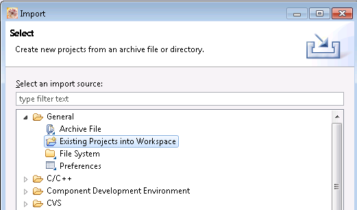
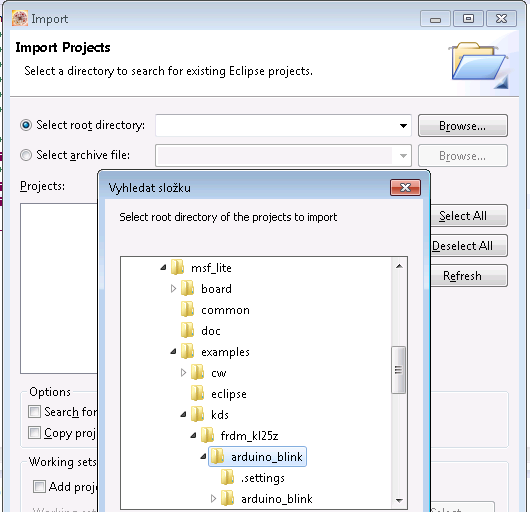
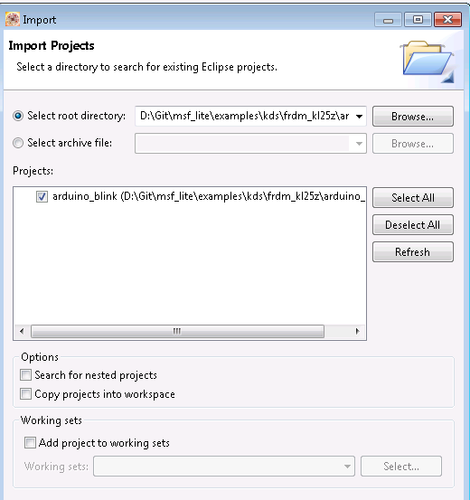
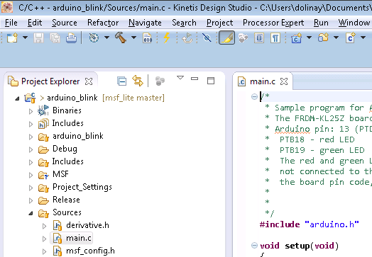
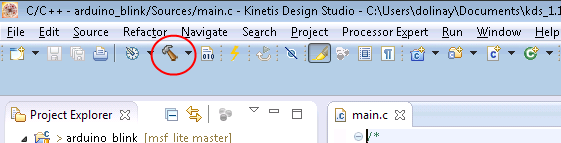
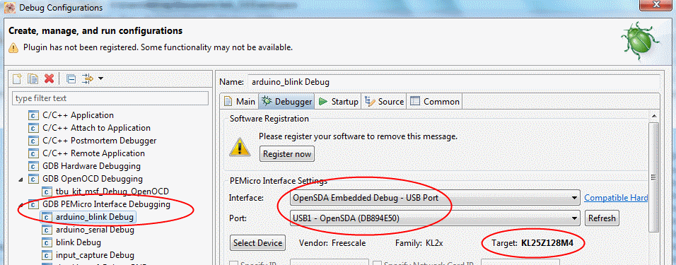
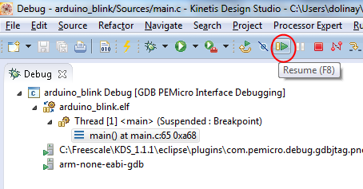
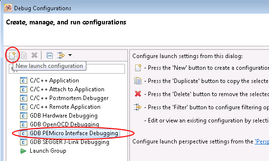
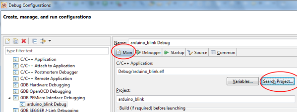
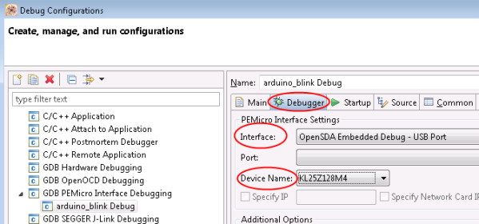

Import MSF Lite example projects into your workspace in Kinetis Design Studio
Version of KDS used: 3.0.0
This document shows how to create programs for the Freescale
ultra-low-cost development board FRDM-KL25Z using Kinetis Design Studio
(KDS).
It assumes you have the MSF Lite source code on your computer, for example, in
c:\msf_lite - which is probably true if you are reading this document from the msf_lite/doc subfolder.
It is recommended that you start with some example program from msf_lite/examples. The following text will explain how.
If you are ready to create your own project with msf_lite, please see the kds_howto3.0.0.txt document.
Preparation
You will need:
Note about the board and OpenSDA
application
I assume you have the FRDM-KL25Z board and USB cable to connect it to
your computer. I am not sure which version of the OpenSDA application
(the 'bootloader') your board will have. It may be a good idea to
update the firmware to the latest version. You can download it from P & E Micro. There is Open SDA Firmware
link at the top of the page as well as instructions for updating the
firmware in your board. The zip package you download from the P & E
Micro website contains many
applications for different boards. You should use the
MSD-DEBUG-FRDM-KL25Z_Pemicro_v114.SDA
which is the debugger, virtual
serial port and mass storage all in one.
Opening example programs
The example programs can be found in msf_lite\examples\kds\frdm_kl25z
folder. The names of the examples which use Arduino API start with
"arduino_", the other examples are "plain" C with the MSF library
functions.
Here is how to try the example programs:
Start Kinetis Design Studio and from the File menu select Import...
In the Import window expand the General
folder and select Existing
Projects into Workspace:

In the next window select the 'Select root directory' option and Browse
to [your msf_lite location]\examples\kds. Select the folder for
the example program you wish to import, for example, the arduino_blink
folder, and click OK.

The project contained in the selected folder should appear in the
'Projects' area in the Import window.

Make sure the 'Copy projects into
workspace' box is NOT checked!
Click the 'Finish' button and the project should be imported.

You can now open the main.c file in the Sources folder to view the code.
To build the program, click the icon with the hammer in toolbar:

You could also right-click the project and select 'Build project' from
the context menu.
The project should build without errors.
Starting the program
There are debug configurations included in the example projects, but
they will probably need modification to work on your computer.
Please connect the FRDM-KL25Z board to your computer.
In Project Explorer in KDS right-click the project and select Debug
As... > Debug Configurations... from the context menu.
Expand the 'GDB PEMicro Interface
Debugging' category and select the debug configuration which contains name of your project.
If you do not see any configurations, please go to the next section - Creating Debug Configuration.
If you see the configuration, select it and switch to Debugger tab on the right.
Make sure the proper values are selected (see picture below):
Interface: OpenSDA Embedded Debug - UAB Port
Port: this will be port on your ocmputer where the FRDM board is connected.
Target: KL25Z128M4.

Now Click the 'Debug' button in the bottom right to start debugging.
If everything goes well, the KDS should switch to debug perspective and
you should see the program stopped at the beginning of main function.
You can now click the Resume button to start the program.

For the arduino_blink example project you should see the blue LED on
the board blinking.
Creating Debug Configuration
We need to have a Debug
configuration
to be able to download (and debug) the program. If for some reasons the
configurations included in the example projects are not available, you
can create a new configuration. To create new debug configuration:
Right-click the project in the Project
Explorer and select Debug
As... > Debug Configurations... from the context menu.
In the Debug Configurations
window select the 'GDB PEMicro Interface
Debugging' and then click the 'New Launch Configuration' button in the
upper left corner of the window.

In the right-hand side of the window some tabs appear. First select the
Main tab. Click the Search
Project... button below the In the C/C++
Application box and select the .elf file which you will see - for
example, arduino_blink.elf.

You should see the selected .elf file (executable) in the C/C++
Application field.
Next, select the Debugger tab.
In the 'Interface' combo box select 'Open SDA Embedded Debug - USB
Port'.
In 'Device name' select 'KL25Z128M4'.

Make sure your FRDM-KL25Z is connected to your computer.
Now Click the 'Debug' button in the bottom right to start debugging.
If everything goes well, the KDS should switch to debug perspective and
you should see the program stopped at the beginning of main function.
You can now click the Resume button to start the program.
For the arduino_blink example project you should see the blue LED on
the board blinking.